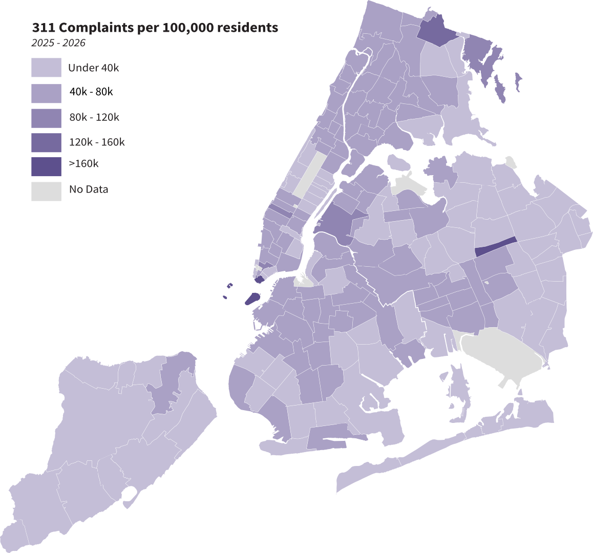
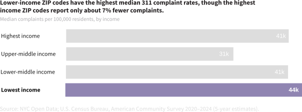
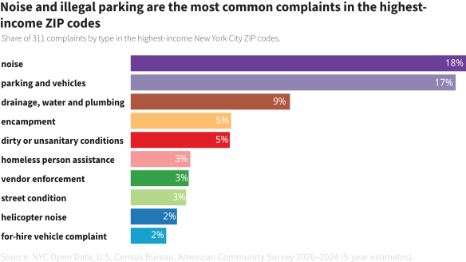
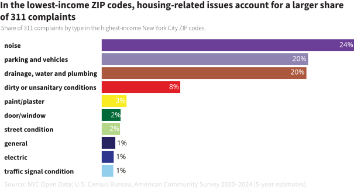

When I first moved to New York for the Lede Program, the city’s unofficial welcoming committee consisted of rats darting out of trash cans and scurrying through the streets. Over the following weeks, the neighborhood slowly introduced itself. My apartment's hot water stopped working without warning, trash cans without lids spilled garbage onto the sidewalks. And at night, noise from street parties carried all the way up to my fifth-floor walk-up.
Most issues eventually resolved themselves, or simply became part of the background noise of living in New York. But they left me wondering: could I have known what issues were common in my neighborhood before moving in? That question led me to New York City's 311 service request data.
Launched in 2003, 311 is New York City's non-emergency service. Residents use it to report problems ranging from rats and loud parties to heating failures and illegal parking. Requests are routed to the relevant city agency, which is responsible for investigating and responding. Here's a snapshot of the complaints New Yorkers filed most often in the last year.
What does this complaint mean?
1 / 10
Parking and Vehicles
Mostly reports of illegally parked vehicles (70%), followed by blocked driveways (20%) and abandoned or severely damaged vehicles (10%).
Looking through the data made me wonder what 311 complaints reveal most: the problems a neighborhood faces, or the people who are most likely to report them. For instance, do wealthier neighborhoods use 311 differently because residents are more likely to know about, trust, or use the system? Or do complaints mainly reflect the conditions residents experience?

To explore this, I grouped all New York City ZIP codes into four income groups based on median household income in that ZIP code. For each ZIP code, I calculated the number of 311 requests per 100,000 residents before comparing complaint rates across income groups.

Higher income was not associated with substantially more complaints. In fact, ZIP codes in the lowest-income group reported slightly more 311 requests per resident than those in the highest-income group in the last year. ZIP codes in the lower-middle income group filed complaints at almost exactly the same rate as those in the highest-income group.
That suggests household income alone does not explain how often residents file 311 requests. Differences in complaint rates could reflect varying levels of reporting, differences in underlying neighborhood conditions, or a combination of both. This analysis cannot distinguish between those explanations.
Complaint volume is only part of the story. I also wanted to know whether higher- and lower-income ZIP codes were reporting different kinds of problems. Rats, broken heating, overflowing trash cans, loud parties—were these the problems all New Yorkers report, or are they concentrated in certain neighborhoods?


Across every income group, the three most common categories remain remarkably consistent: noise, parking and vehicle issues, and drainage, water, and plumbing.
The biggest difference is in housing-related complaints. Lower-income ZIP codes filed nearly twice as many drainage, water, and plumbing complaints as the highest-income ZIP codes in the last year. They also devoted a larger share of complaints to unsanitary conditions (8% versus 5%), suggesting housing maintenance and sanitation issues are more commonly reported concerns in lower income ZIP codes.
Some complaint categories were concentrated almost entirely in higher-income ZIP codes, including vendor enforcement, helicopter noise, homeless person assistance, encampments, and for-hire vehicle complaints. Lower-income ZIP codes, meanwhile, reported relatively more problems involving deteriorating housing and infrastructure, including paint and plaster, broken doors and windows, electrical issues, and traffic signals.
While income has little relationship with how often people file reports, it says much more about the kinds of problems they're asking the city to solve.
About this project
This project was developed as part of the 2026 Lede Program at Columbia University. 311 service request data were obtained from the New York City Open Data portal and include requests filed between June 2025 and June 2026. Median household income and population estimates come from the American Community Survey (ACS) 5-Year Estimates, conducted by the U.S. Census Bureau. A detailed description of the methodology, data processing, and analysis is available in the GitHub repositoryGitHub repository.